Développeur web en reconversion – En recherche d'alternance (18 mois dès octobre 2025)
Je m'appelle Romain, je me forme au métier de développeur web et j’intègre la formation Concepteur Développeur d’Applications chez Simplon en octobre 2025. Passionné par la logique, les interfaces bien pensées et les projets concrets, j’apprends chaque jour à mieux structurer mon code et mes idées.
J’ai déjà réalisé plusieurs projets personnels, de l’API à l’interface, avec une vraie envie de bien faire, de comprendre ce que je code, et de construire des choses utiles. Mon but : rejoindre une équipe qui cherche un alternant impliqué, sérieux, et qui apprend vite.
Voici trois projets concrets que j’ai réalisés récemment, en autonomie ou en formation. Ils illustrent mes compétences sur le frontend, le backend, l’organisation MVC et le déploiement.
Un projet complet réalisé en autonomie dans le cadre d’un exercice de sélection : API Express + Sequelize (SQLite), frontend React, documentation Swagger, déploiement sur GitHub Pages et Render.
Voir le projet complet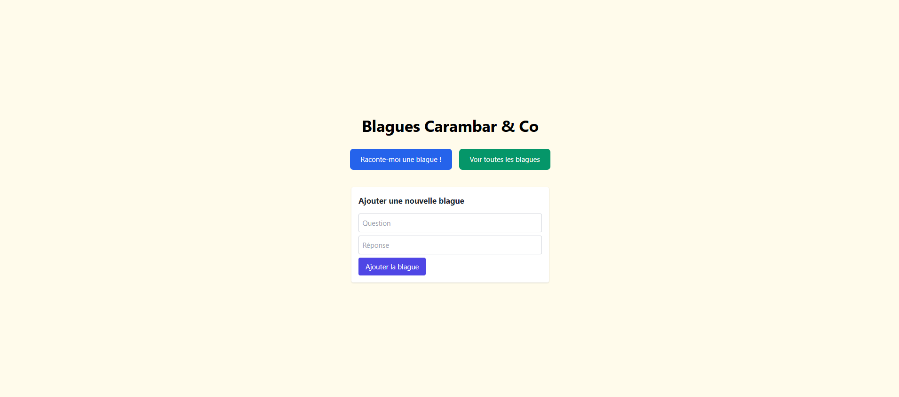
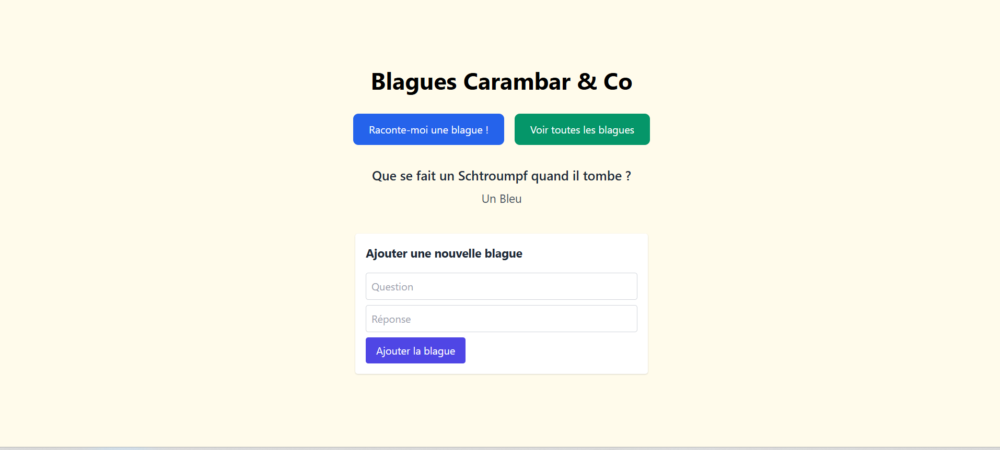
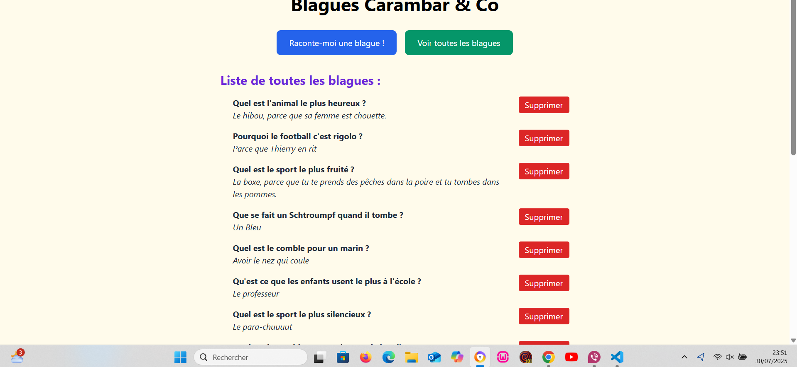
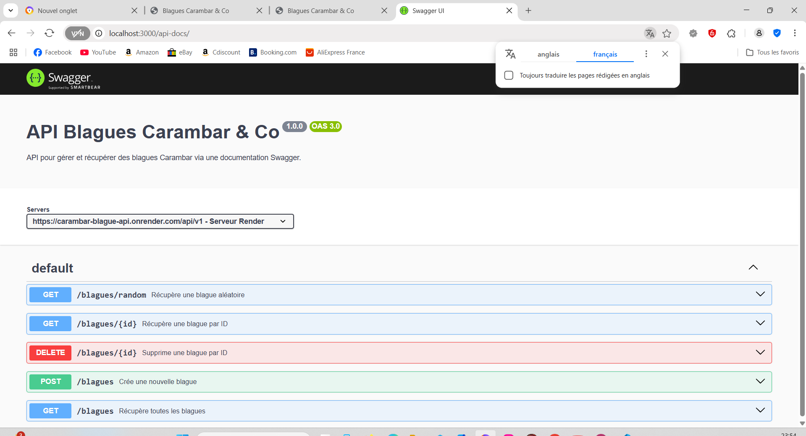
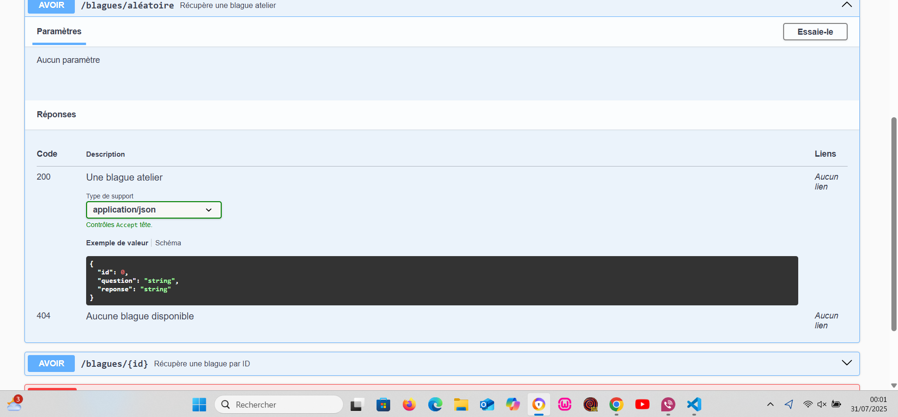
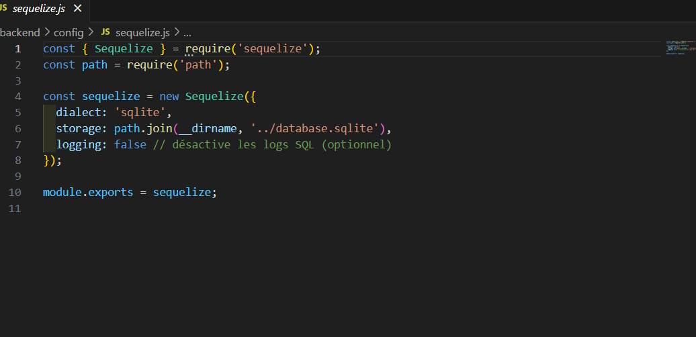
Une collection de mini-jeux HTML/CSS/JS que j’ai codée pour progresser sur le DOM, les événements et les sessions PHP. Chaque jeu a sa propre logique, avec système de score et organisation modulaire des fichiers.
Voir le projet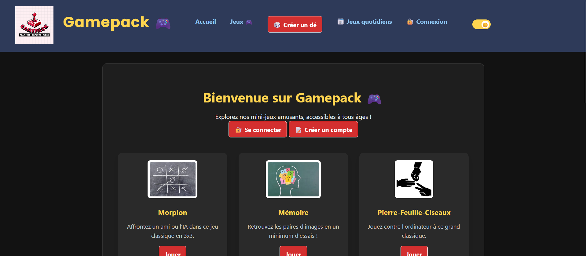
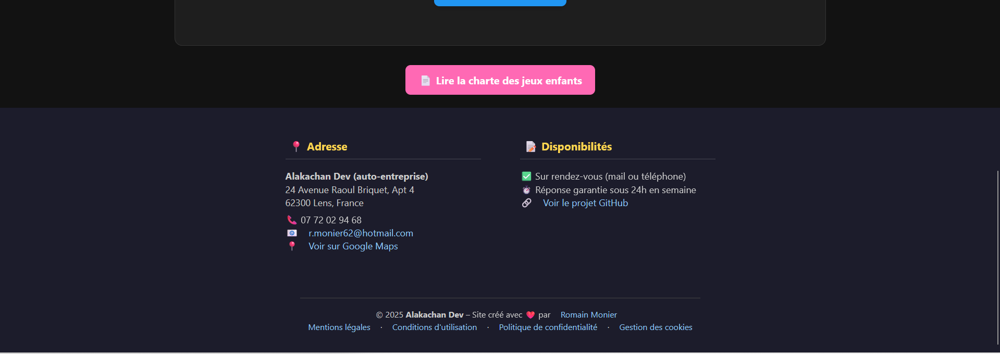
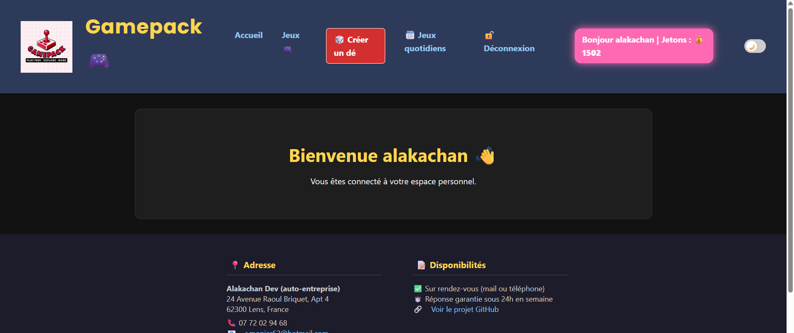
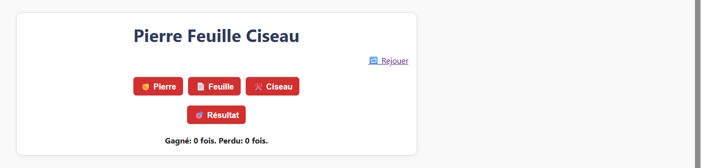
Un site vitrine développé pour une association de solidarité. Réalisé avec une architecture MVC en PHP POO, il inclut un back-office sécurisé, une page de dons, un système d’actualités et une gestion RGPD avec TarteAuCitron.
Voir le projet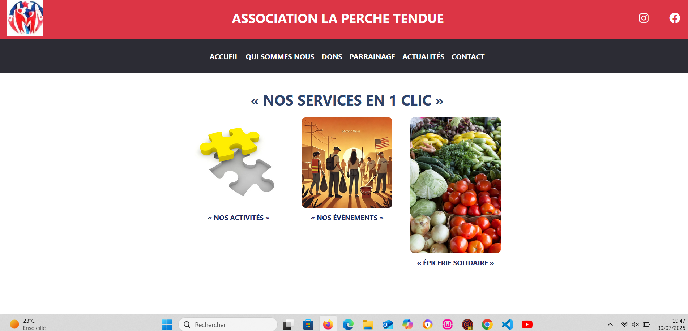
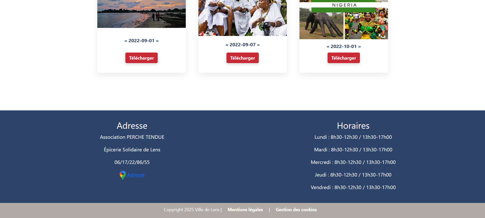
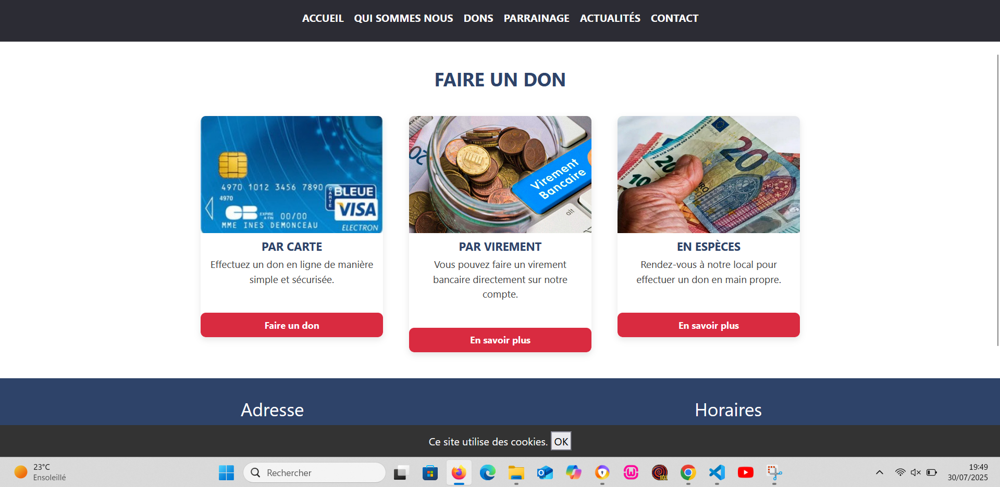
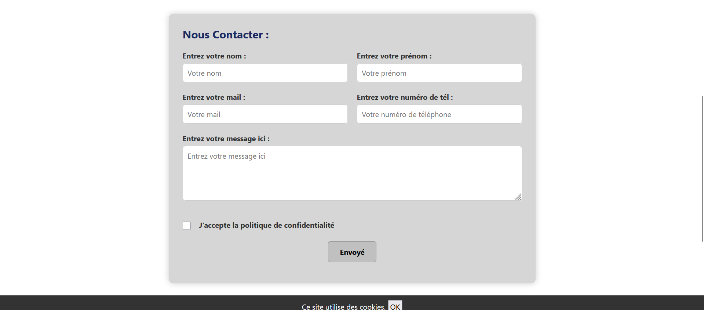
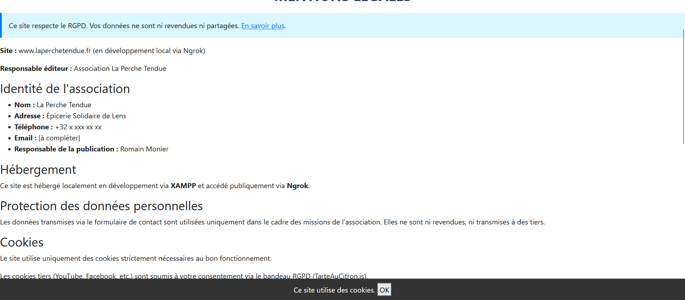
Email : r.monier62@hotmail.com
GitHub : github.com/Romain62300